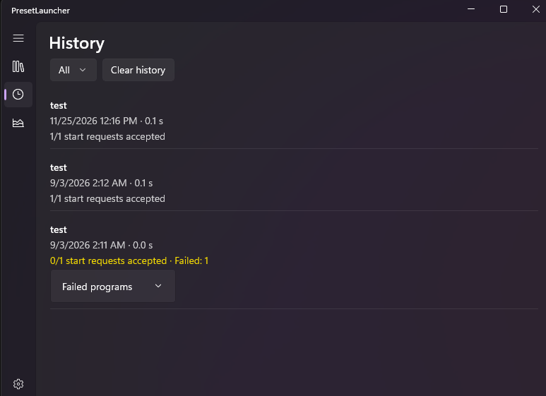
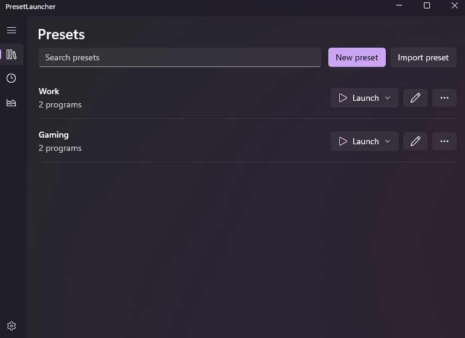
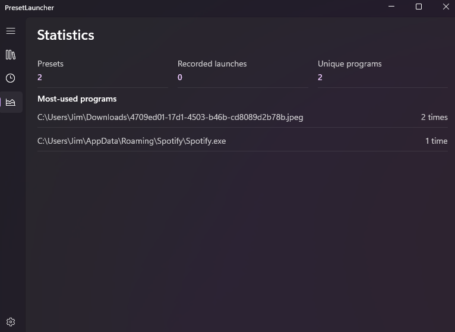
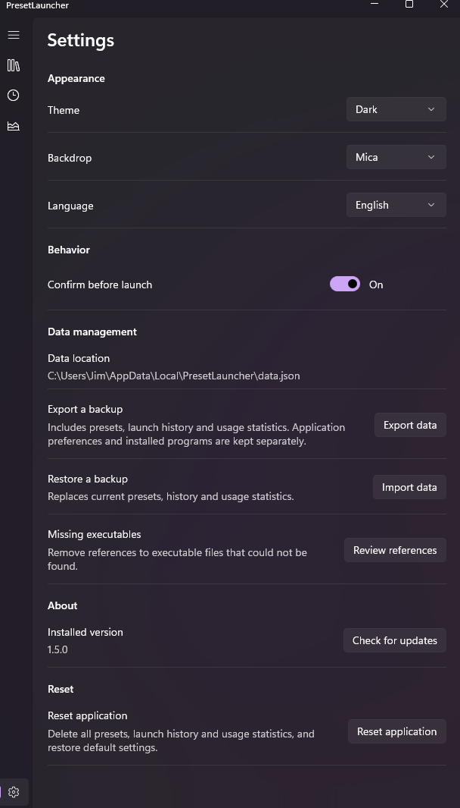

Screenshot unavailable
Launch history
Full launches are recorded with their results, including programs that failed to start.

Screenshot unavailable
Presets group applications that are used together, with a configurable launch order.
Full launches or only programs that are not already running.
Configurable delays, launch order and administrator privileges.
Recorded launches and frequently used programs.
JSON export and data restoration.

Screenshot unavailable
Full launches are recorded with their results, including programs that failed to start.

Screenshot unavailable
Launch counts and frequently used programs, collected locally.

Screenshot unavailable
Per-program launch options, appearance preferences and JSON backups.
Built in C# with .NET and WinUI 3. Contributions and feedback are welcome.